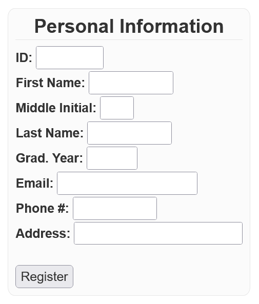
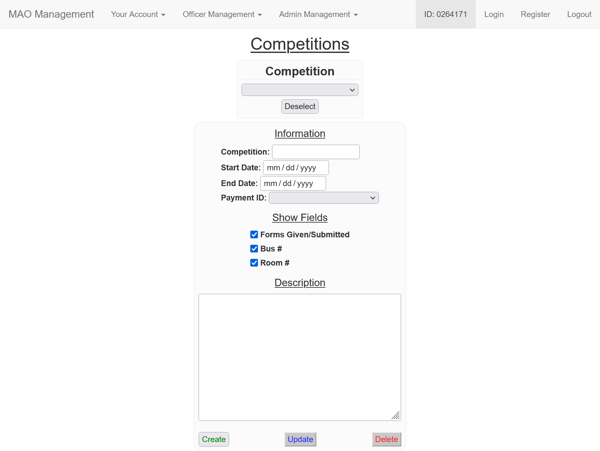
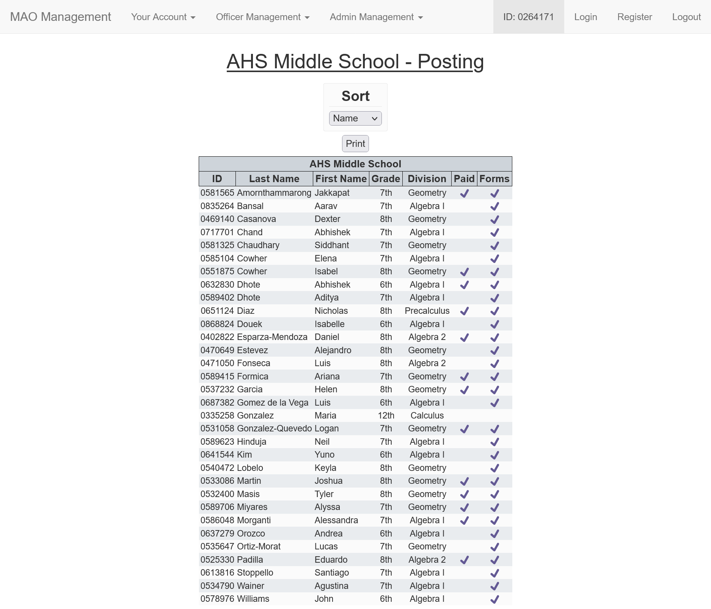
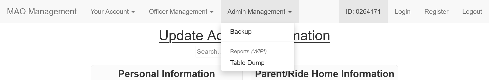
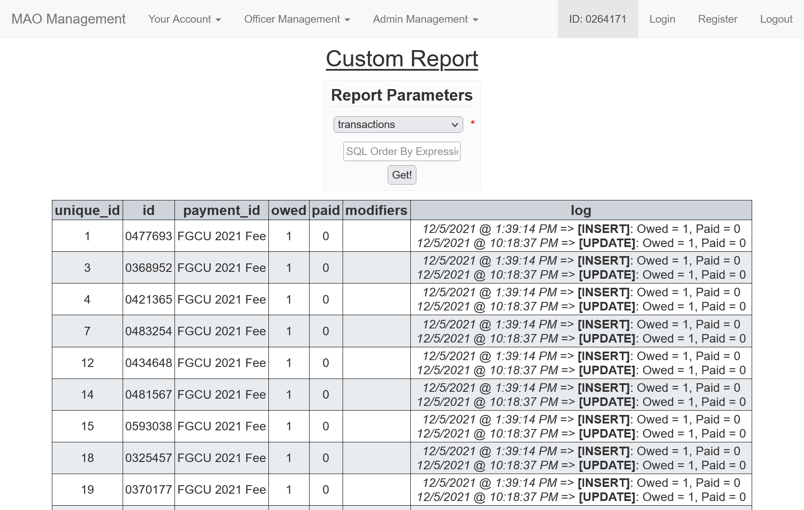
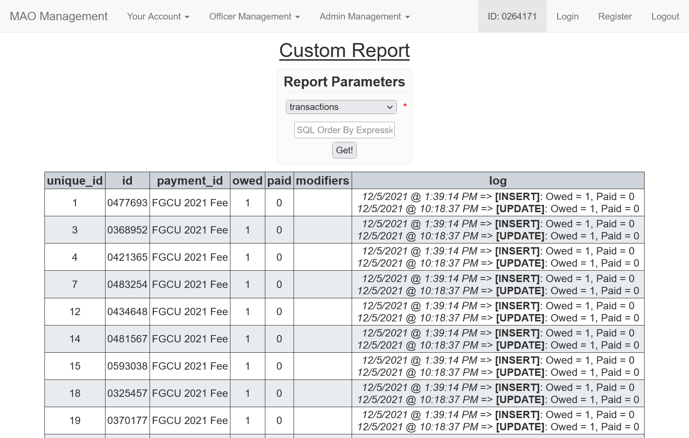

MAO-Management
Installation Instructions
- Upload a copy of the latest release into your
public_htmldirectory. - Extract!
- Go to phpMyAdmin and create a database.
- Import
mao.sqlinto your newly created database. - Edit
config.iniwith the appropriate SQL database and email information. - Move
./phpMyBackupPro/global_conf.php/to./../files/.
To-do
FAMAT ID Updater
Competition Tracker:
- Competition Tracker Deselect Page Should Have Statistics on all Comps.
Administration Panel (TBD, WIP)
Introduction
Account Registration & Access
Register
 Register your account with your 7-digit school ID. After being registered, you will be redirected to the login page and your login code will be sent to your email.
Login
 If you don't already have your current login code, enter your ID under Get a Login Code and click Email Code.
If you don't already have your current login code, enter your ID under Get a Login Code and click Email Code.
To login, enter your ID and current login code.
Note: Each login code is a random 6-digit uppercase hexadecimal number.
Your Account

Account Information
 This page displays the user's current account information. Students may update each section at a time. The information in red is only editable by officers and admins.
This page displays the user's current account information. Students may update each section at a time. The information in red is only editable by officers and admins.
Competition Selections
 This page allows competitors to "opt-in" (select) which competitions they would like to attend and their current registration, payment, form, bus, and room status. Once a student selects to go to a competition, they will appear in the competition's selection report (explained later).
This page allows competitors to "opt-in" (select) which competitions they would like to attend and their current registration, payment, form, bus, and room status. Once a student selects to go to a competition, they will appear in the competition's selection report (explained later).
Note: Just because a student selects to go to a competition does not mean they will. An officer must approve their selection by registering them to the competition (explained later).
Transactions
 All current transactions, outstanding or otherwise, are shown here. The red in the Total Owed column indicates that money is owed by the account and green indicates that money is owed to the account.
All current transactions, outstanding or otherwise, are shown here. The red in the Total Owed column indicates that money is owed by the account and green indicates that money is owed to the account.
The Archive button moves a transaction to a separate table to keep receipts of all transactions made.
Note: The Actions column is only viewable and usable by officers and admins. The Add Transaction(s) button will be explained later. Each transaction has a log that records all update made to a transaction and is only viewable by the admin (shown later).
Officer Management
Update Accounts
The red fields mentioned before in a student's Update Account Information page can be edited by officers and admins.
Delete Accounts
 It does what you think it does!
It does what you think it does!
Manage Payments

 You can create new payments, and update and delete existing ones.
You can create new payments, and update and delete existing ones.
Note: The description is shown as HTML! New lines are represented by <br>.
Transactions

 By clicking the "Add Transaction(s)" button mentioned before, a popup windows will appear that will allow an officer or admin add another transaction such as a club sweater.
By clicking the "Add Transaction(s)" button mentioned before, a popup windows will appear that will allow an officer or admin add another transaction such as a club sweater.
Note: In the event that a transaction may require additional information such as a shirt size (if the purchased size is different that the one found in the student's account info) or receipt number, the transaction's Modifier box may be used.
Manage Competitions

 You can create new competitions, and update and delete existing ones. The fields that are selected are shown in the Competition Tracker and in the competition reports (shown later).
You can create new competitions, and update and delete existing ones. The fields that are selected are shown in the Competition Tracker and in the competition reports (shown later).
Note: The description is shown as HTML! New lines are represented by <br>.
Competition Tracker

Sort By - Sort Registered Students List:
- Name (Default),
- Grade,
- Division, or
- ID
Reports:
- Selections

This report shows students that have selected to go to this competition. An officer or admin can approve (registers student to competition, a student's selection, deny (removes the student's selection) a student's selection, or approve all students' selections (Add All button).
- Posting 
This report is usually posted outside the sponsor's classroom.
- Checkoff List

This report is usually taken on the bus and to the competition and is used to keep track of all student's on a competition and contains the student's contact information and competition status.
- Selections
Other Actions:
- Add
Here, you can add a student that is not already registered to the competition.
- Create Bubble Sheets

This magic button creates the bubble sheets for all students registered to the competition. The team bubble is left blank so that it can be bubbled when team is decided (usually at the competition).
Bubbles From File

 You can make non-FAMAT bubble sheets using a CSV file.
You can make non-FAMAT bubble sheets using a CSV file.
Custom Bubble Sheets
WIP!
Admin Management

Backup

 Logging in with your database username and password allows you to backup your MAO database to
Logging in with your database username and password allows you to backup your MAO database to ./../files/export.
Table Dump

 
This allows admins to dump tables in the MAO database as HTML tables.

This allows admins to dump tables in the MAO database as HTML tables.